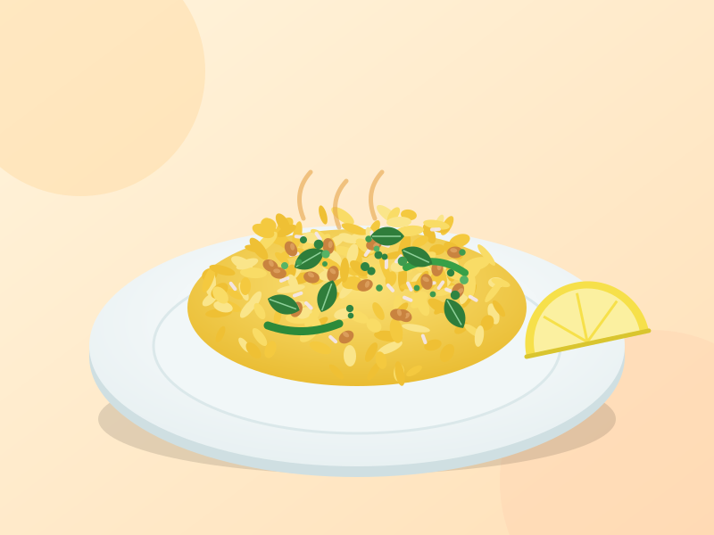

Maharashtrian Breakfast
Kanda Poha
A light, quick and flavourful breakfast made with flattened rice, onions, peanuts and gentle spices. Ready in about 25 minutes.

Ingredients
Tick each item as you gather it.
Preparation
-
Rinse the poha
Place the poha in a colander and rinse under running water for about 30 seconds, until the flakes are soft but not mushy. Drain for 5 minutes, then mix in the salt, sugar and half of the turmeric.
-
Fry the peanuts
Heat the oil in a wide pan. Fry the peanuts on medium heat until golden, then remove them and keep aside.
-
Make the tempering
In the same oil, add the mustard seeds. When they splutter, add the curry leaves and green chillies.
-
Cook the vegetables
Add the potato cubes, cover and cook for 5 to 6 minutes until tender. Add the onion and sauté until soft and translucent.
-
Add the spice
Stir in the remaining turmeric and cook for 30 seconds.
-
Add the poha
Add the drained poha and mix gently so the flakes do not break. Cover and steam on low heat for 2 minutes.
-
Finish and serve
Turn off the heat. Add the peanuts, lemon juice and coriander. Serve hot with a lemon wedge.